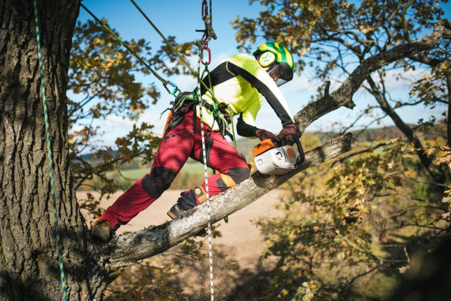
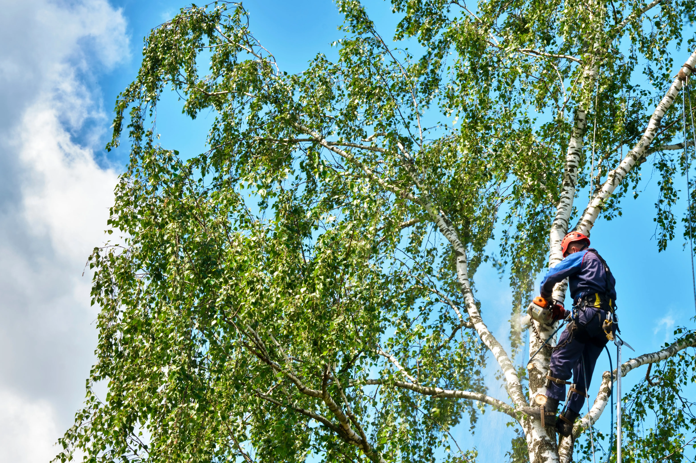
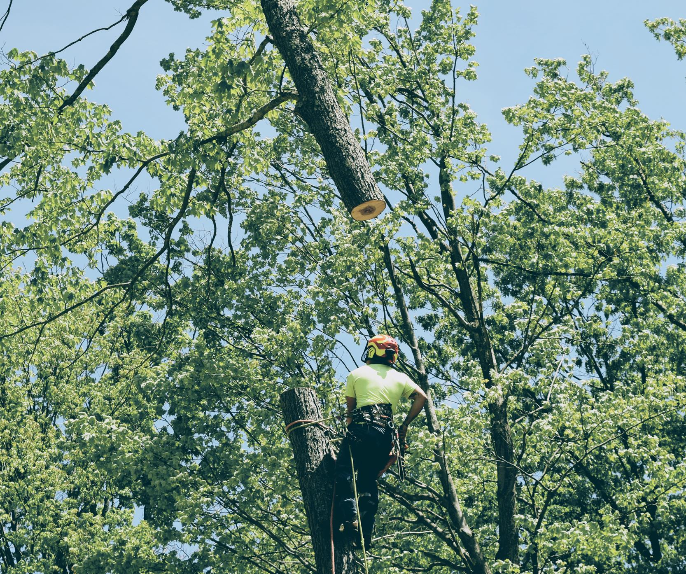

Tree pruning & canopy care
Tree Pruning at Flora Tree Services
Proper pruning keeps trees healthy, safe, and beautifully shaped. Our qualified arborists use selective, industry-approved cuts to improve light and airflow, reduce risk in storms, and guide strong long-term structure. Fully insured. Clean-up included.
- Crown thinning to improve light & airflow
- Crown lifting for driveway & pedestrian clearance
- Crown reduction to manage size & spread
- Deadwood removal to reduce hazards
- Hedge & shrub pruning for crisp, even lines
- Fruit tree pruning to promote healthy yield




Why Choose Flora Tree Services
We combine local expertise, safety-first practices, and fair pricing to deliver the best tree care in Canberra & Queanbeyan.
-
Free Site Assessment
No-obligation inspections to explain options and costs before you commit.
-
Qualified & Insured Arborists
Experienced, fully insured crews for safe work in tight or hazardous conditions.
-
Fast & Reliable Service
From storm callouts to routine pruning, we turn up on time and get it done right.
-
Trusted Local Team
Proudly serving Canberra, Queanbeyan, Googong & Jerrabomberra with great reviews.